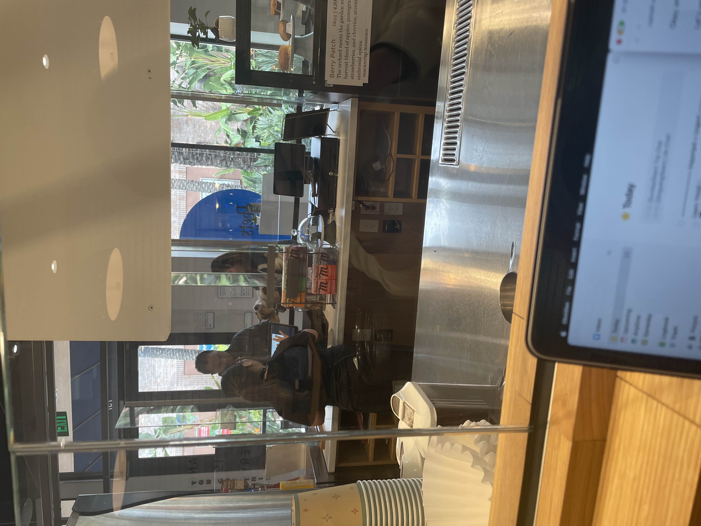
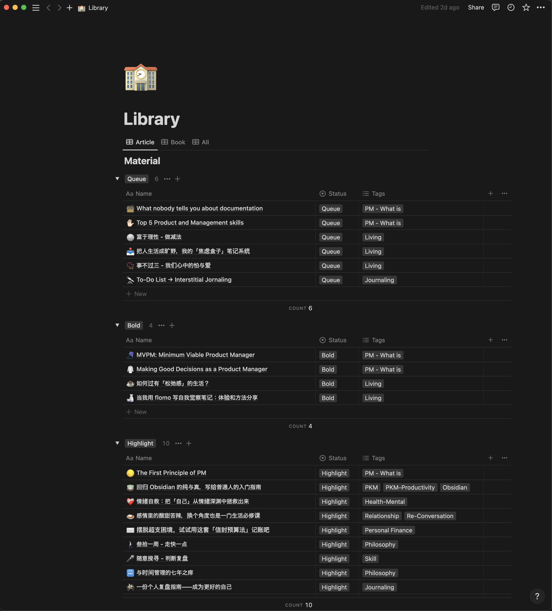
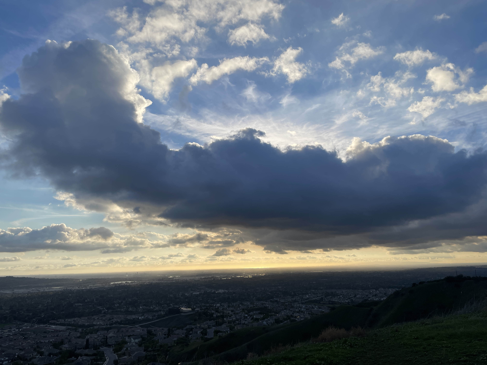
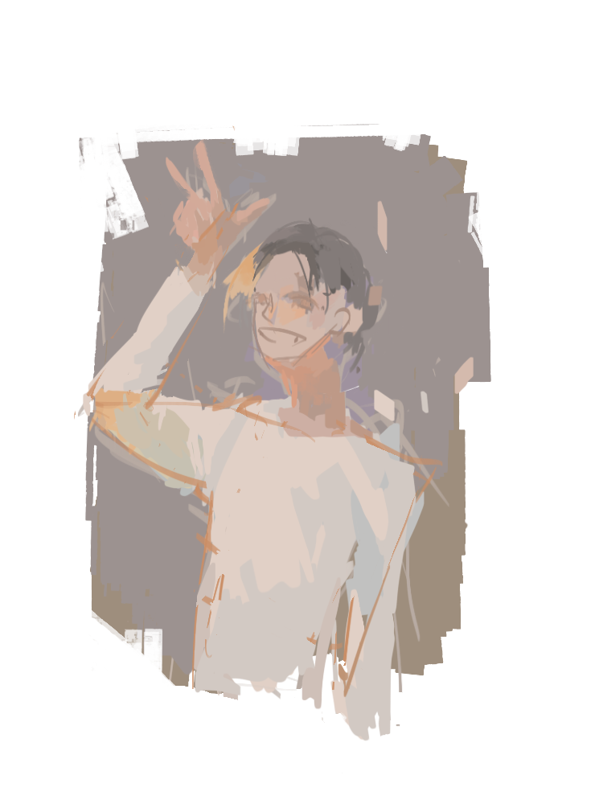

Ongoing Journey - December 2022
Winter break, coffee shop, 松弛感
placedholderI went to a new coffee shop every day during break. Every day I would get up, pick a city I wish to go to, go there and only after that pick a coffee shop I want to check out.
The past year have been very intentional with life, and perhaps the biggest lesson out of it was, I simply can’t. Felt stressed when things didn’t go as planned and only felt relief when they did, this anxiety lingered towards the end of the semester.
So yeah, started letting the unpredictable part of the world come into my life, working at a coffee shop instead of the room as a first step, as what Bill said, living a more laxed life.
All that being said I don’t drink coffee lol, Qingyang suggest order latte with no shots, wonder if that’s a fancy way to say milk lol.
Reading, spaced repetition
placeholderBack during TAing, Kosbie told us the first day that TA is not just good for the students, but also ‘good for yourself.’
‘You see’, slowly walking from one end of the room to another, ‘while teaching students you essentially learned the material again, a few times of these you will never forget :-)’’
Later learned a similar concept called spaced repetition and got to practice it during the break, reading comments I left for myself in articles, for the first time I confirmed growth with myself this year, seeing how I get different insights out every time I read the same article was quite fascinating.
For a guide on spaced repetition, found this progressive summarization how to very helpful, would recommend :)
Capstone team formation, birds eye and frogs eye
placeholderRemember, everyone you meet is afraid of something, loves something, and has lost something.
Team formation for Capstone happens next week, in the form we let the student pick two students who they don’t wish to work with. Checked the responses yesterday and, one name almost everyone in their department put down as their anti-preference.
I’ve seen this student’s work before and he is really, really good at his job, previously imagined everyone wanting to work with him, so at first thought I read it wrong lol.
Writing this not to dig around reason why, got reminded of the concept of ‘bird’s eye’ and ‘frog’s eye’. I was so close up with CMU that, only until this TA opportunity that I learned we are all just regular people, as Weichen said, the better we are at something, the less attention we get to put on something else.
We are all equal in time, makes me rethink on what I want to prioritize on.
Daily album, 2022 in review
placeholderSecond year where I kept a daily album, where each day I would pick one photo that marks as the highlight, and revisit them all at the last day of the year. A few thoughts popped up after seeing the album for 2022
人并不是活一辈子，而是活几个瞬间
The highlight for most of my days didn’t bring many thoughts, I went and revisited the 2021 album, there were some I didn’t even remember the reason I marked them as highlights. While thinking ‘nothing matters in the long run’, starts to resonate with what Crystal said more and more, we don’t live a life but rather a few moments within it.
life is a picture, but you live in a pixel
Quite the contrary of the first thought, realized the album helped to, ‘flatten’ a year almost? Instead of a few dramatic moments/shades of color I recall, fulfillment while carrying 3 bags of groceries up 17 floors, emptiness as the only person sitting in the library Saturday morning, affection after chatting with a friend for hours while sitting on their apartment floor, the smaller moments started coming together, adding more gradients to the picture.
…and that’s a wrap for 2022! Made a small promise to myself to update for a year and have successfully fulfilled it. For those who are reading a small thank you, the amount of support I got kept me going through many, many times that I was about to skip/stop, thanks for reading, for the genuine feedback, and the experience you all shared after.
I am still ideating how I would approach this blog start from now on but, will keep you posted on my ongoing journey :).